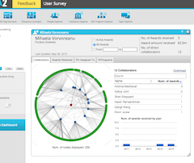
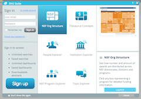
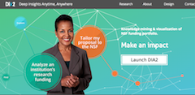
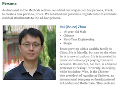
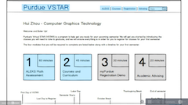
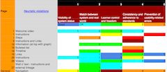
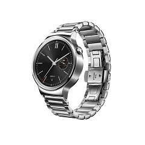

DIA2 is a data-mining tool for academics created to explore National Science Foundation grants.
I collaborated with the UX team in designing interactions, developing interactive prototypes, and implementing changes to the data visualization tool.
See more


VSTAR is an online student transition program for incoming Purdue students. The program's primary target demographics was international students, especially Chinese students.
I collaborated with a team of UX design and Civil Engineering students to conduct user research, usability studies, and redesigning the orientation tools and process.
See morePurdue Salsa Club is a student organization that I have been involved with for several years.
I have designed various websites for this organization. For this iteration, I tried to trim down the amount of navigation and integrate social media feeds.
See more
This study identified perceptions and social norms that may affect smartwatch adoption. Interviews were conducted to identify perceptions of smartwatch use and norms that might affect those perceptions.
Smartwatch use was found to activate norms associated with wristwatch use – specifically, smartwatch users’ peers took offense to the users looking at their wristwatches. This study also found that norms prevent the use of smartwatches’ voice controls in public and various perceptions of smartwatch use and ownership.
Read it